O que são branches?¶
Nesse arquivo, vamos aprender um incrível recurso do GitHub chamado "branch". Com ele podemos criar ramificações dentro do nosso repositório. Fazendo uma analogia, é como se houvesse mundos paralelos, em que cada um deles seria uma versão diferente de um mesmo projeto. Essa diferença pode ser entendida como implementações de testes dentro do projeto, uma forma de mostrar novas implementações aos colaboradores sem necessariamente adicionar ao branch padrão (também conhecida com "branch master") e manter salva versões antigas do projeto, de forma a garantir a segurança do código caso ocorra algum problema nas últimas versões criadas do repositório.
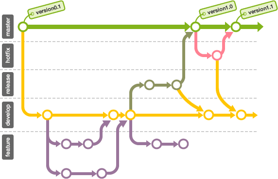
Observando esses grafos, é possível perceber que com a criação de branches, podemos assegurar a segurança dos arquivos na branch master, de modo que caso seja feita alterações que possam prejudicar a branch master, por inúmeros motivos, essas implementações danosas podem ser removidas ou alteradas sem afetar diretamente os arquivos que estavam estáveis.
Criando branches¶
Veja os passos abaixo para que você comece a trabalhar com criação de branches em seu repositório.
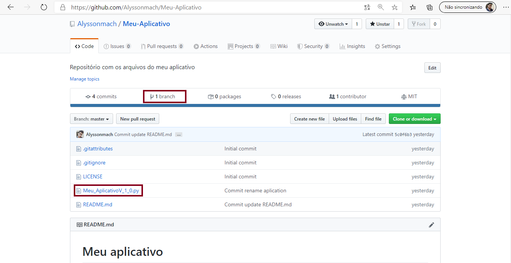
Quando um repositório é criado, por padrão, há apenas a branch master disponível. Nela, devemos considerar que todo o seu conteúdo é de relevância e está estavél. Desse modo, toda vez que houver implementações novas que ainda serão modificadas ou testadas, convém criar uma nova branch para esses arquivos. Só depois que não houver mais nenhuma alteração a se fazer neles, levar os arquivos a branch master. Assim será feito para todas as novas implementações, sendo uma boa prática de versionar arquivos.
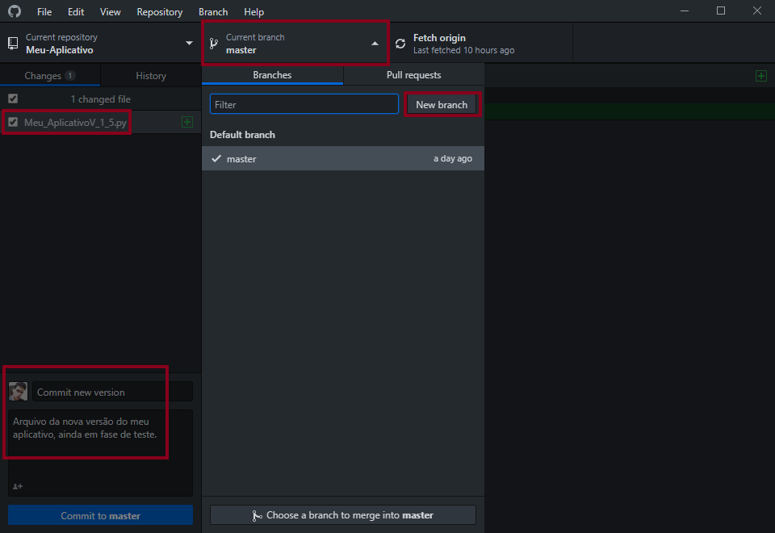
No GitHub Desktop, quando houver uma nova versão do seu projeto, ou mesmo implementações discretas, você pode fazer o "commit" dos arquivos em uma nova branch obedecendo os seguintes passos da imagem abaixo.
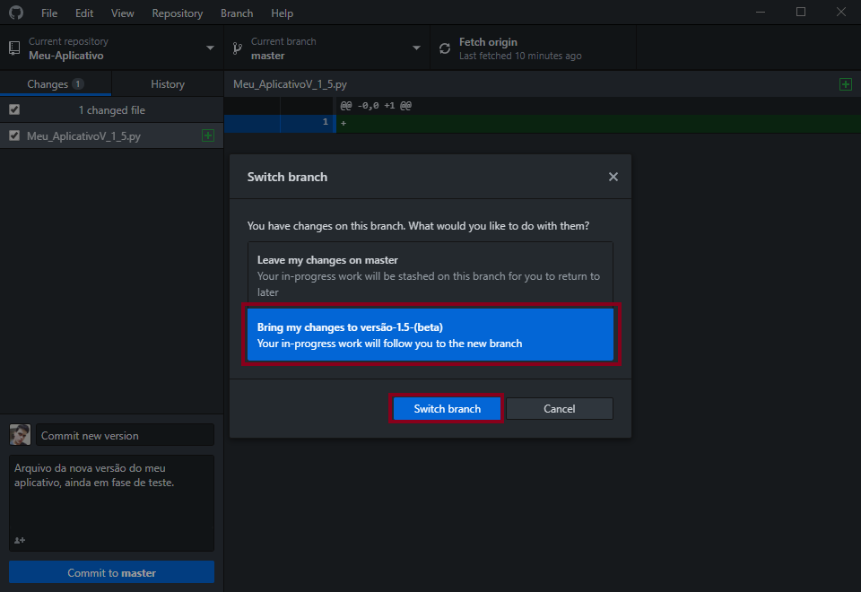
Escolha se você quer colocar as alterações na branch master ou na branch que será criada para colocar uma outra versão do projeto. No exemplo abaixo, vamos esoclhar comitar na nova branch chamada "versão-1-5-(beta)".
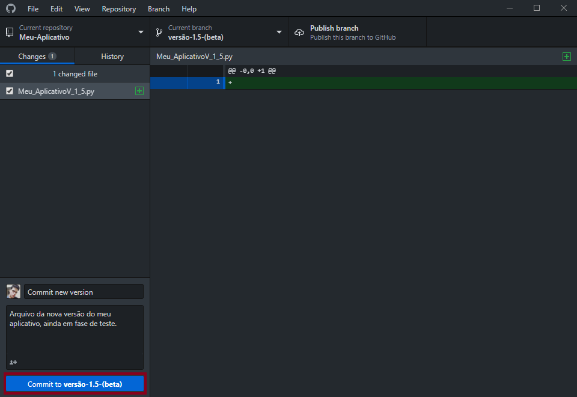
Desse modo, observe que todas as alterações feitas serão colocadas na branch criada para a nova versão do projeto.
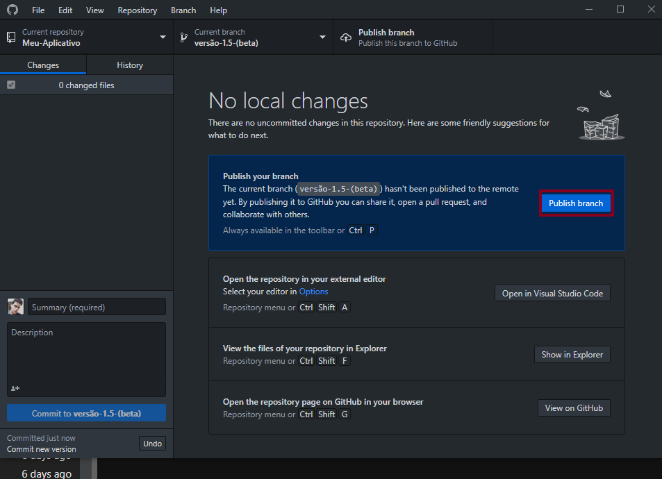
Quando tudo estiver pronto, clique em "publish branch" para enviar a branch criada com o seus devidos arquivos ao repositório remoto GitHub.
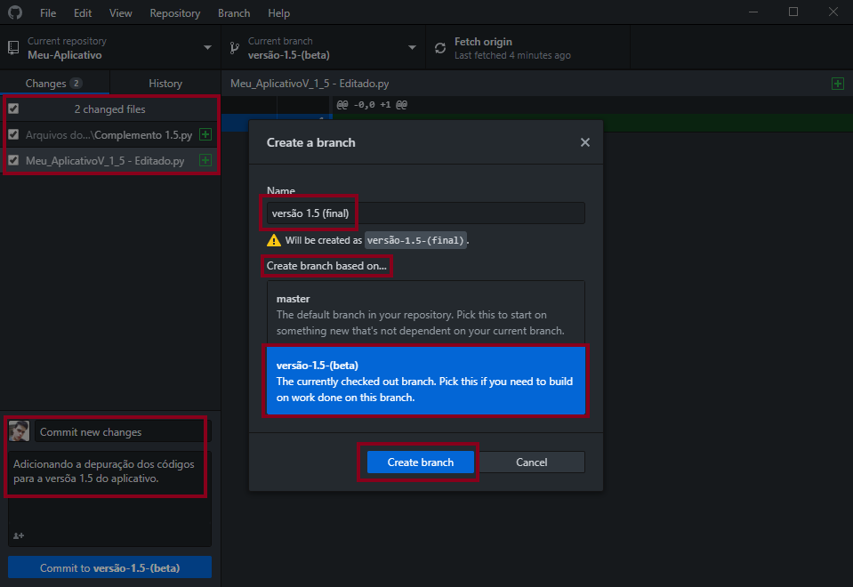
É possível criar uma branch dentro de outra branch, por esse motivo que também podemos chamá-la de ramificação.
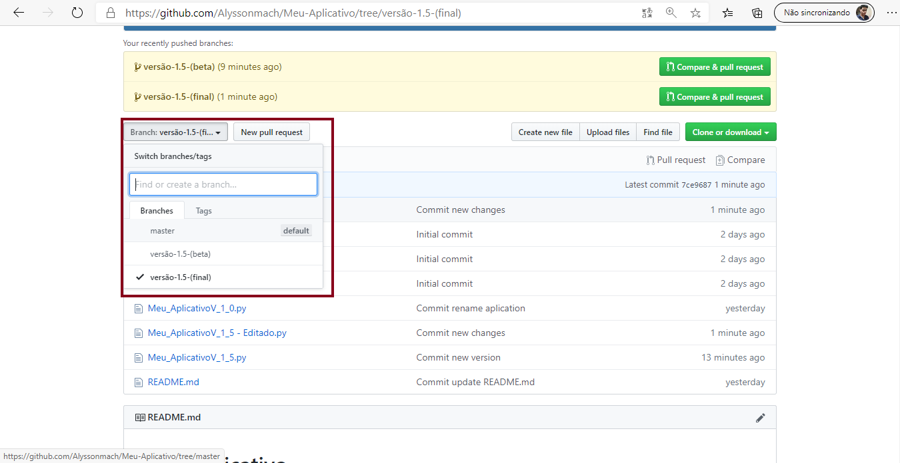
Observe no repositório remoto GitHub que todas as branches criadas estão lá. Cada uma delas vai adquirir o conteúdo da anterior com o adicional das novas alterações feitas.
Observe o esquema abaixo. Ele nos mostra as ramificações que foram criadas nos exemplos acima. A partir da "Branch Master" foi criada uma ramificação para "Branch versão-1-5-(beta)" e dessa para Branch versão-1-5-(final), cada uma dela recebendo o conteúdo adicional mais o conteúdo novo implementado.
- Esquema das branches:
1.0 - Branch Master1.1 - Branch versão-1-5-(beta) + Conteúdos da Branch Master 1.1.1 - Branch versão-1-5-(final) + Conteúdos da Branch versão-1-5-(beta)
Enviando todas as Branches para a Master¶
Após você ter segurança sobre tudo que foi feito, você pode enviar os arquivos das branches feitas para a master e, assim, todas as suas alterações no projeto estarão realmente implementadas a ele com êxito.
O objetivo agora é enviar os arquivos adicionais da "Branch versão-1-5-(final)" para a "Branch versão-1-5-(beta)" e desse enviar para a "Branch Master". Caso seja de interesse ofuscar os arquivos da versão beta, poderemos também enviar os arquivos da versão final diretamente para a master.
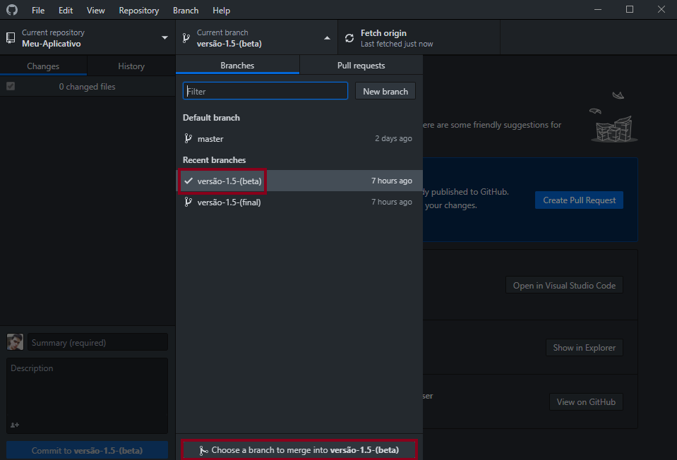
No GitHub Desktop, na área de branch do repositório em questão, há uma opção chamada "Choose a branch to merge into...", esteja como a branch receptora e clique nessa opção para depositar os arquivos nela.
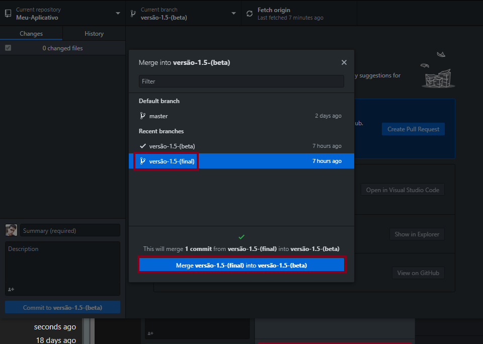
Após ter feito os passos acima, escolha a branch que você deseja enviar para outro. Nesse caso, vamos enviar "versão-1-5-(final)" para "versão-1-5-(beta)" e dar um "push" no repositório remoto GitHub.
Da mesma forma foi feito para enviar a branch "versão-1-5-(beta)" para a "master".
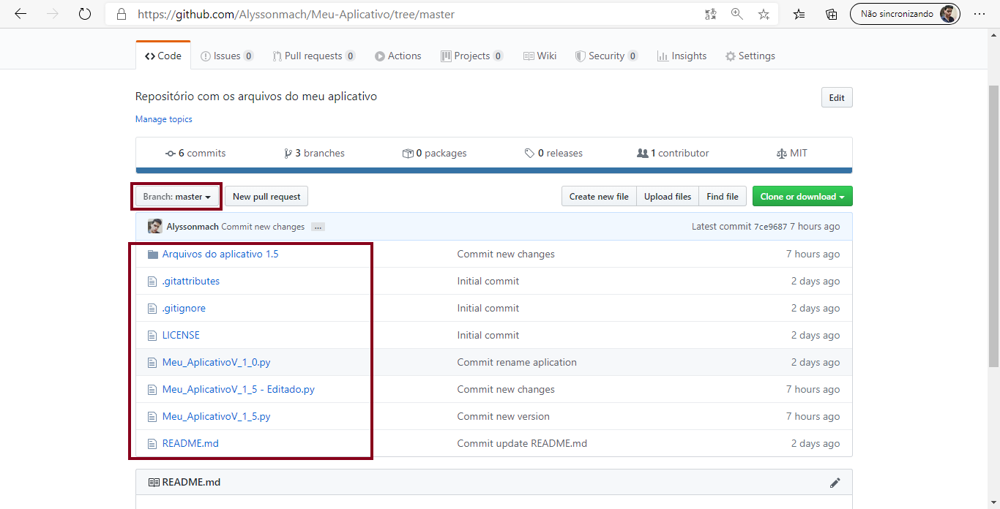
Observe agora que o nosso repositório GitHub na branch padrão está com todos os arquivos anteriores.
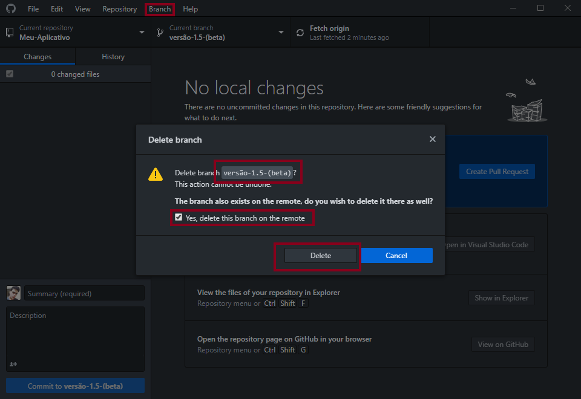
Como as branches que não são padrão já nos serviram e todos os conteúdos delas estão na branch master, podemos deletá-las. Indo na opção "branch" e em "delete", quando você está dentro de uma branch no GitHub Desktop, você pode excluí-la. Marque a opções que aparece para excluir do repositório remoto.
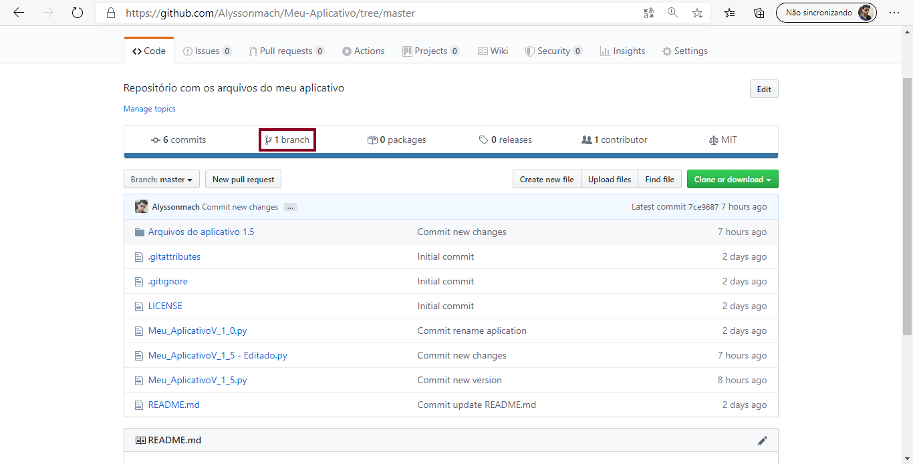
Assim você pode observar em seu repositório que as branches excluídas não estão mais lá.
Próximos Passos...¶
Está gostando do conteúdo? Compartilhe com seus amigos para que eles possam aprender também! Ajude a tornar a educação gratuita mais plural e democrática.